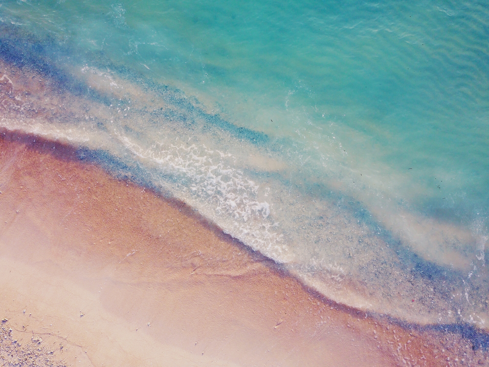
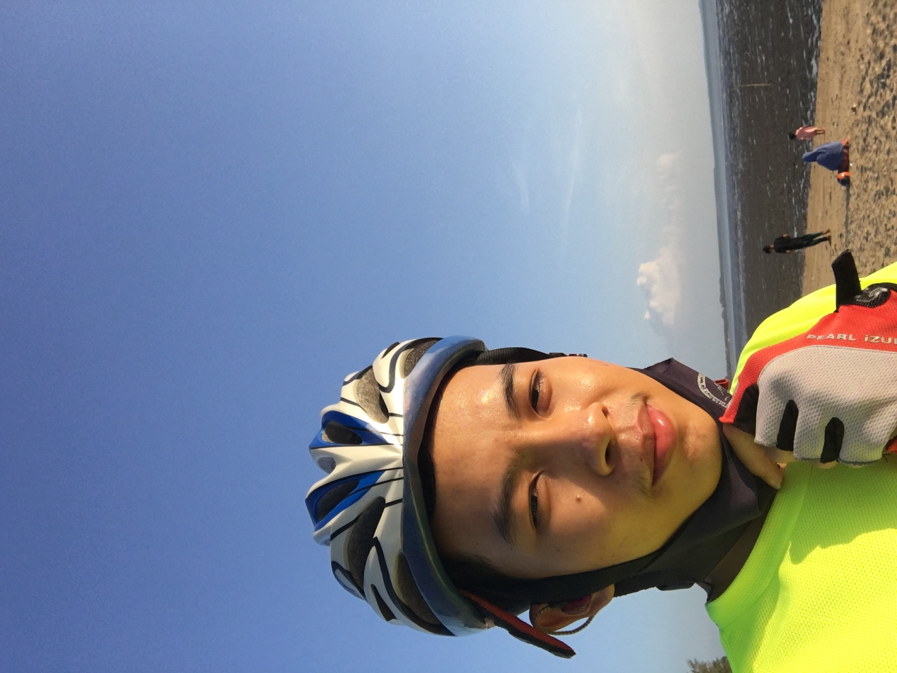
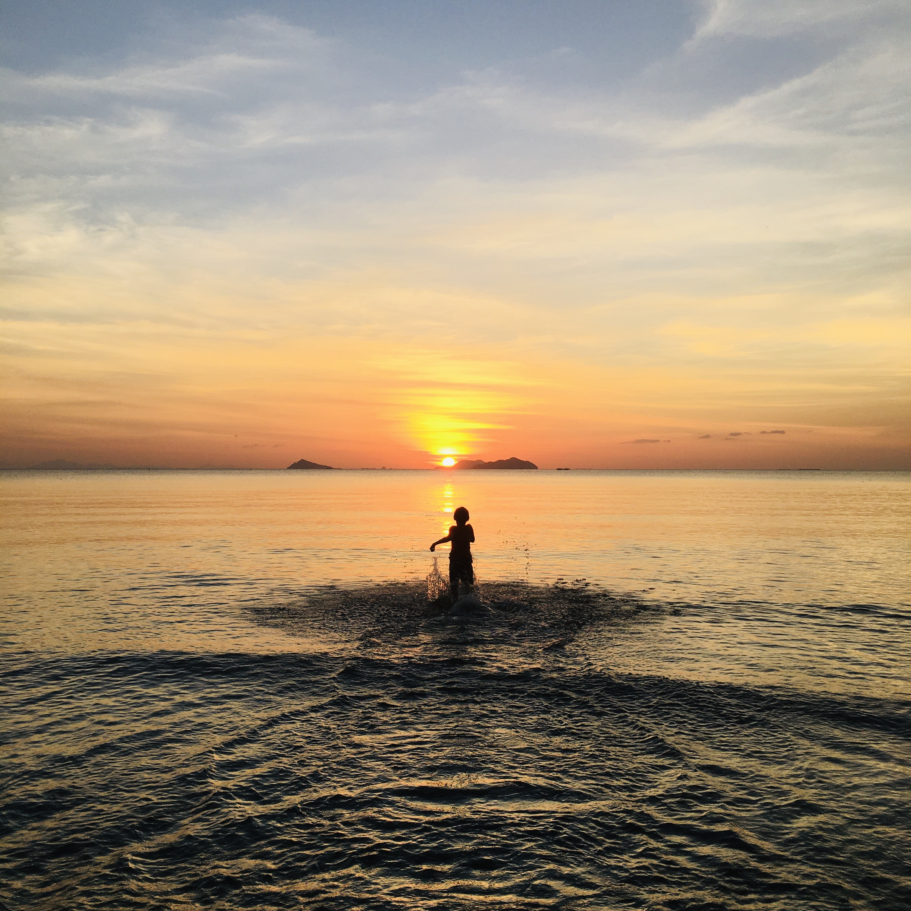

There was nothing to do in mid-March 2019, and it was probably the most boring day of the month. But that day, I felt like cycling to the beach, so I prepared an afternoon for the trip. In the afternoon, after having finished eating and packing things up, I set off. We keep cycling together while listening to music. But while watching birds and trees, I encountered the first obstacle when I unexpectedly encountered a snake on the road. So I was shocked and almost fell off my bike. Plus, that day was filled with so many cars on the road that many people thought of traveling as well.
As I continued my journey, I encountered the next obstacle, which was that I like to be chased by dogs while cycling, so I was very afraid of being bitten that day, but in the end I narrowly escaped.Before reaching the beach, you have to go through the forest first. After entering for a while, I couldn't see the path because many tourists rarely come to this beach, so I cycled in and got lost for an hour, having to ask the locals for directions until finally I was able to come out. Finally, the journey out of the jungle made me feel very happy when I saw the most beautiful beach for the first time.
 When I arrived at the sea, I saw a more beautiful
view than what they described, and at the same time, it was the time when the sun set.
which, if you and your girlfriend were traveling together at the time, would be romantic.
But at that moment, I could only sit and watch the sun alone. However,
there was still a song that was a comforting friend at that time. Everything was perfect.
Even though I encountered many problems, I eventually reached my destination.
When I arrived at the sea, I saw a more beautiful
view than what they described, and at the same time, it was the time when the sun set.
which, if you and your girlfriend were traveling together at the time, would be romantic.
But at that moment, I could only sit and watch the sun alone. However,
there was still a song that was a comforting friend at that time. Everything was perfect.
Even though I encountered many problems, I eventually reached my destination.
Finally, when it started to get late, I made my way back home, terrified that I would not be able to return home. Because I had to go into the forest, where I had already lost my way. But I'm not afraid because I believe I can overcome this obstacle. As soon as I started to travel in, I began to tremble because of various sounds. Luckily, I remembered the way, so I could get out easily and quickly. When traveling back home, I was hit by my mom, but I didn't care because I've experienced a lot today. In the end, this trip was the most awesome trip ever.